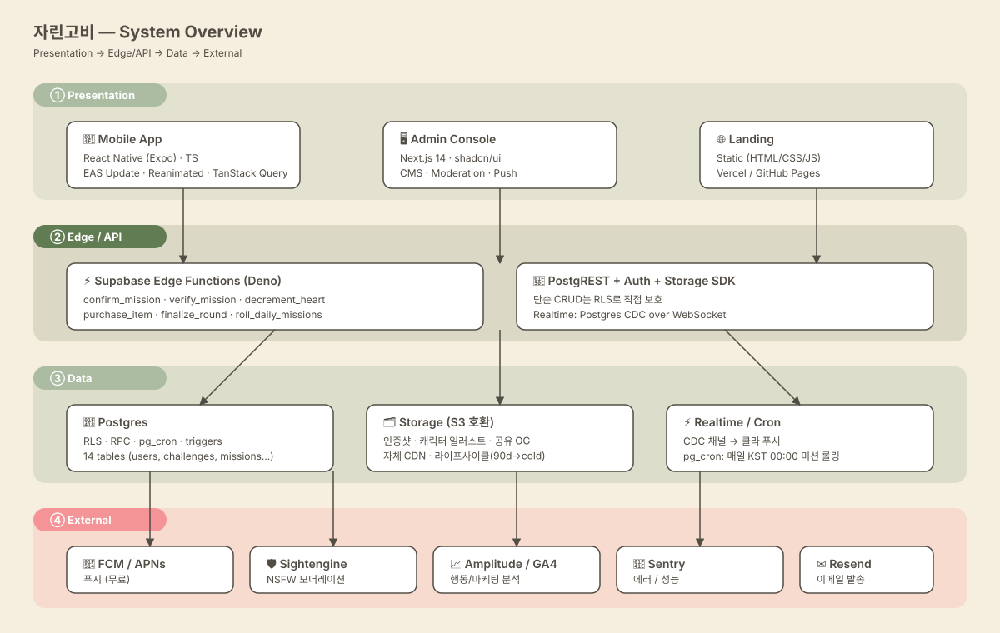
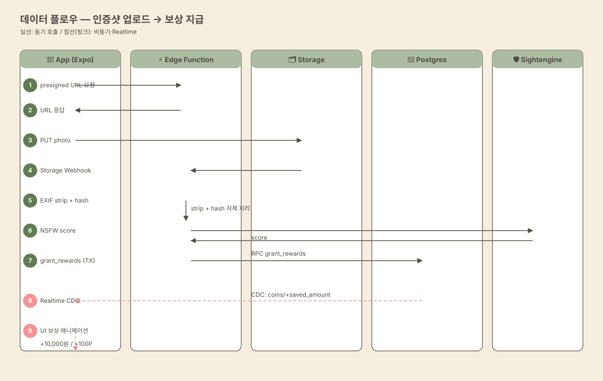
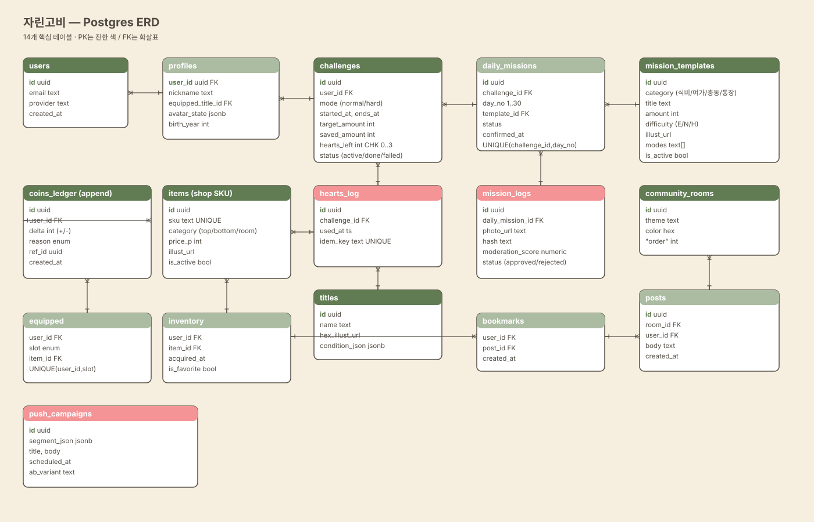
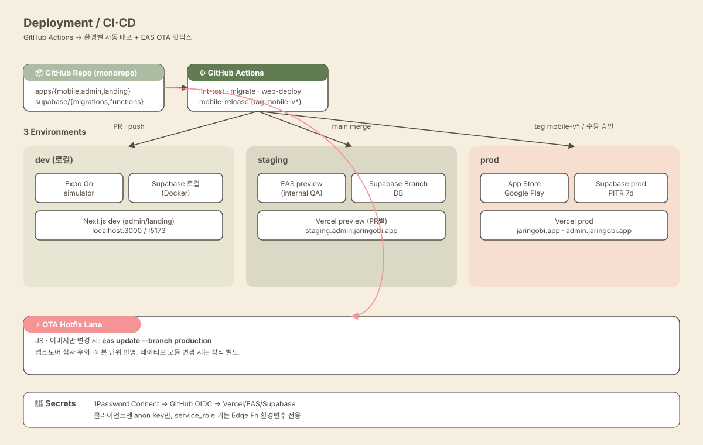
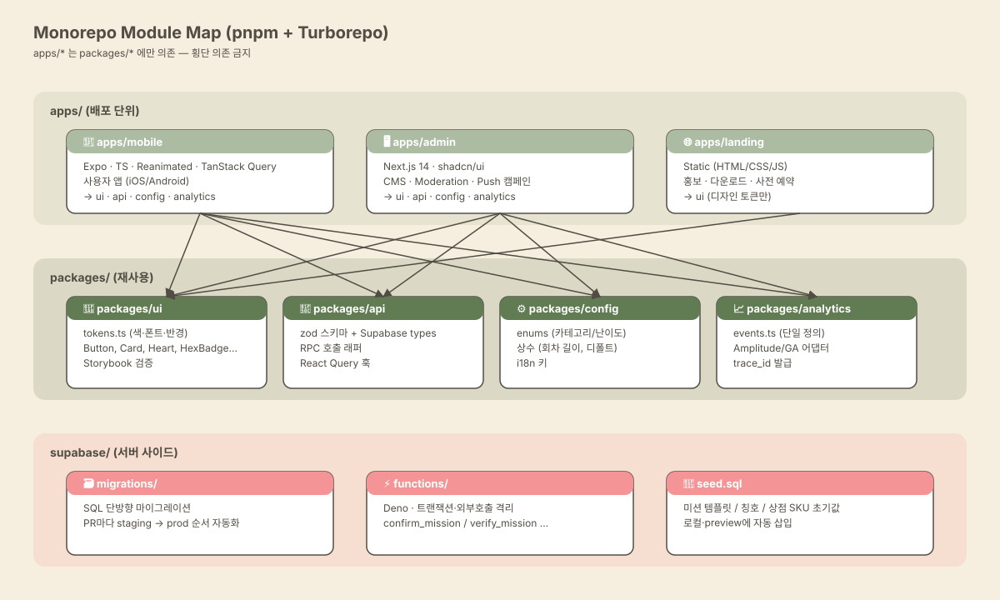

① System Overview — 4-Layer 논리 구성
자린고비는 Presentation → Edge/API → Data → External의 4계층으로 구성됩니다. 모바일 앱·어드민·랜딩이 Supabase Edge Functions와 PostgREST를 통해 데이터에 접근하고, 외부 서비스(FCM, Sightengine, Amplitude, Sentry, Resend)는 Edge Function을 거쳐 시크릿이 노출되지 않도록 격리됩니다.

② Data Flow — 인증샷 → 보상
앱이 presigned URL로 사진을 Storage에 직접 업로드하면, Storage Webhook이 Edge Function을 트리거합니다. EXIF GPS 제거, 해시 중복 체크, Sightengine NSFW 검사를 통과하면 PL/pgSQL 트랜잭션으로 coins_ledger 적립 + challenge.saved_amount 증가 + mission status 갱신이 원자적으로 일어나고, Postgres CDC가 클라이언트로 Realtime 푸시되어 +10,000원/+100P 애니메이션이 즉시 재생됩니다.

③ ERD — 14개 핵심 테이블
회차 단위 challenges, 1~30일 daily_missions, append-only coins_ledger(이중기입),
그리고 캐릭터 꾸미기를 위한 items / inventory / equipped / titles 가 핵심입니다.
모든 사용자 종속 테이블에 RLS auth.uid() = user_id가 적용됩니다.

④ Deployment — 3환경 + OTA 핫픽스
GitHub Actions가 변경 영역에 따라 dev / staging / prod로 자동 배포합니다.
모바일은 EAS Build/Submit으로 스토어에 올라가고, JS·이미지만 변경 시 eas update로
심사 없이 분 단위 핫픽스가 가능합니다. 시크릿은 1Password Connect + GitHub OIDC로 안전 주입.

⑤ Module Map — 모노레포 의존도
pnpm + Turborepo 모노레포. apps/*는 packages/*에만 의존하고,
packages 사이의 횡단 의존은 금지됩니다. 디자인 토큰·이벤트 이름·zod 스키마를
모두 packages에 단일화해 비개발자가 어드민에서만 손대도 일관성이 유지됩니다.

{kind=link}
{kind=link}
{kind=link}
{kind=link}
{kind=link}